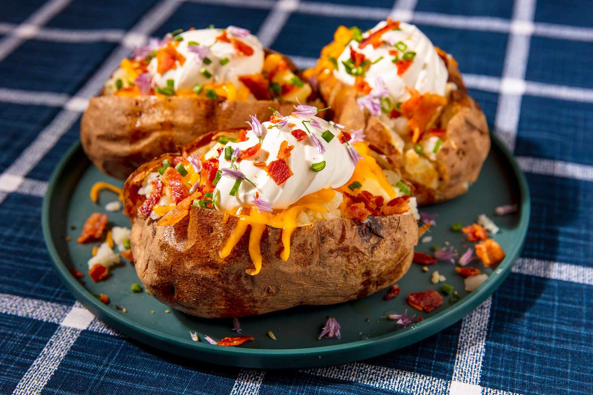

Baked Potato

This is my famous baked potato! So good, you'll slap you're grandma!
Ingridients/Supplies
- 1 potato
- Salt
- Pepper
- Shreeded Cheese
- Butter
- Chives
Cooking Instructions
- Preheat oven to 350F. Use a fork to poke holes on two sides of the potato
- Wrap potato in aluminum foil
- Place wrapped potato into oven for 30 mins or until soft and squishy
- Remove potato from oven. Unwrap and use fork or knife to split it open
- Add butter, salt, pepper, cheese, chives, and sour cream
- Boom! you're potato is ready
If you really want to take things up a notch, you can cook bacon, chop it up, and throw it on top!